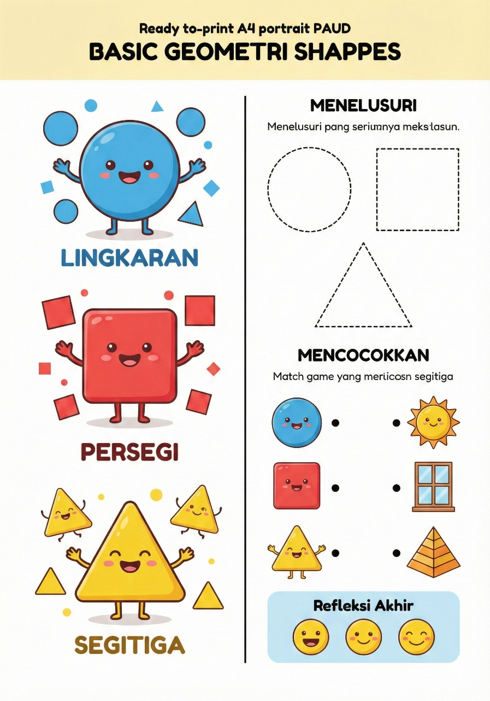
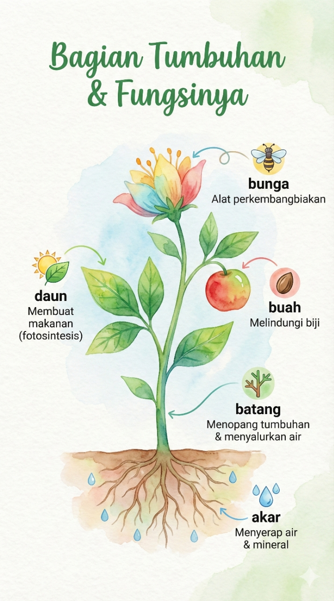
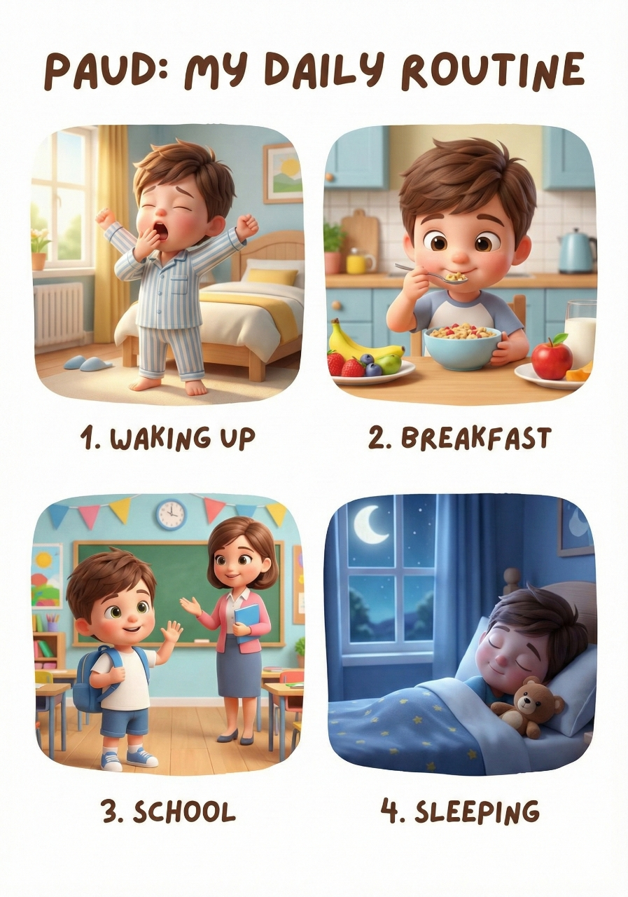

AI Tools Library
← Kembali ke DashboardEduPrompt Studio
Tools edukasi untuk menghasilkan prompt visual pembelajaran yang terstruktur, sesuai jenjang, dan fleksibel dari sisi gaya visual.
Pilihan gaya visual:
Kawaii Pastel
Flat Vector
Playful Colorful
Doodle Style
Realistic Kids
Chibi
Outline-only
Papercraft
Ukiran Kayu
Pixar Style
Ghibli Style
Watercolor
Storybook
Soft 3D Cartoon
Custom Style
Contoh Gambar & Cara Menulis Instruksi
Berikut contoh visual pembelajaran yang dihasilkan menggunakan AI, beserta contoh cara menulis instruksi di EduPrompt Studio.

Siklus Hidup Kupu-kupu
Mode: Infografis
Materi: Siklus hidup kupu-kupu
Jenjang: SD
Tujuan Pembelajaran: Memahami tahapan siklus hidup.
Gaya Visual: Kawaii Pastel

Rantai Makanan Hewan
Mode: Worksheet
Materi: Rantai makanan hewan
Jenjang: SD
Tujuan Pembelajaran: Mengenali hubungan makan.
Gaya Visual: Doodle Style

Bentuk Geometri Dasar
Mode: Workbook
Materi: Bentuk geometri dasar
Jenjang: PAUD
Tujuan Pembelajaran: Mengenal bentuk.
Gaya Visual: Playful Colorful

Bagian-bagian Tumbuhan
Mode: Infografis
Materi: Bagian-bagian tumbuhan
Jenjang: SD
Tujuan Pembelajaran: Memahami fungsi bagian tumbuhan.
Gaya Visual: Watercolor

Kegiatan Sehari-hari Anak
Mode: Worksheet
Materi: Kegiatan sehari-hari
Jenjang: PAUD
Tujuan Pembelajaran: Mengenal urutan aktivitas.
Gaya Visual: Pixar Style
Siap Mencoba EduPrompt Studio?
Gunakan contoh di atas sebagai panduan untuk membuat prompt visual pembelajaran sesuai kebutuhan Anda.
Buka EduPrompt Studio